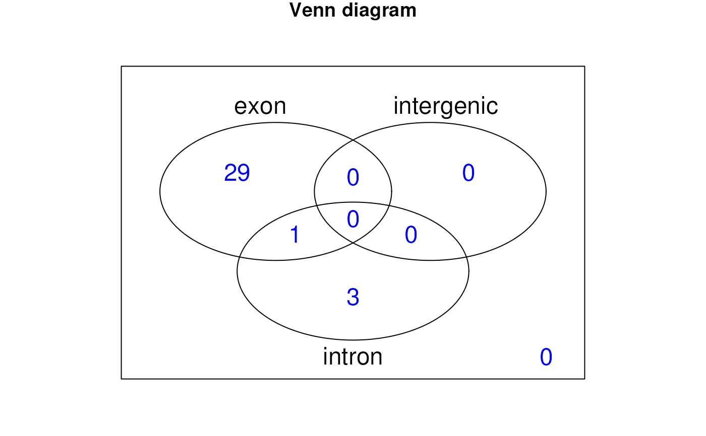
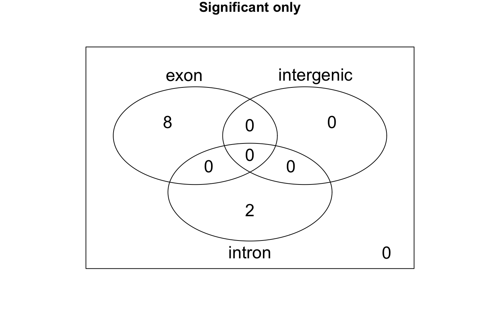

Makes a venn diagram for the regions given the genomic state showing how many regions overlap introns, exons, intergenic regions, none or multiple groups.
vennRegions(annotatedRegions, subsetIndex = NULL, ...)
| annotatedRegions | The output from annotateRegions
used on |
|---|---|
| subsetIndex | A vector of to use to subset the regions to use for the
venn diagram. It can be a logical vector of length equal to the number of
regions or an integer vector. If |
| ... | Arguments passed to vennDiagram. |
Makes a venn diagram plot for the annotation given the genomic state and the actual venn counts used to make the plot.
annotateRegions, vennCounts, vennDiagram
## Load data library("derfinder") ## Annotate regions annotatedRegions <- annotateRegions( regions = genomeRegions$regions, genomicState = genomicState$fullGenome, minoverlap = 1 )#>#>## Make venn diagram venn <- vennRegions(annotatedRegions)## Add title and choose text color venn2 <- vennRegions(annotatedRegions, main = "Venn diagram", counts.col = "blue" )## Subset to only significant regions, so you don't have to annotate them ## again venn3 <- vennRegions(annotatedRegions, subsetIndex = genomeRegions$regions$significant == "TRUE", main = "Significant only" )